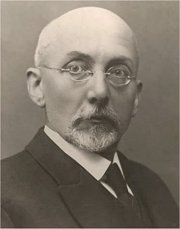

Redon: Oko krouí jako nìjakı zvláštní glóbus smìrem k nekoneènu
Moreau: Zjevení
|
SYMBOLISMUS
Øecké slovo „symbolon“ pùvodnì oznaèovalo smluvenı poznávací znak èlenù tajné organizace. Symbolisté se hlásili k myšlenkám prokletého básníka Mallarméa, jen hledal v poezii kouzlo a tajemství. Povaoval ji za jedinou cestu k Absolutnu, která je ovšem vyhrazena pouze zasvìcenım. Básník má smìøovat k nedosaitelnému a k abstraktním ideám. Nepojmenovává pøedmìt pøímo, ale snaí se ho evokovat umìleckımi prostøedky skrze symboly (znaky). Odvrat od realistické popisnosti a orientace na fantastickou obraznost, mysticismus, hermetismus a transcendentní proitky èiní ze symbolismu nádhernı, ale velmi tìce pochopitelnı smìr. Symbolisté chápali svìt i vesmír jako harmonickı celek.
V roce 1886 sepsal básník Jean Moréas první Manifest symbolismu. Vrcholná symbolistická díla vytvoøil Maurice Maeterlinck, Paul Valéry, Paul Claudel nebo Otokar Bøezina.
Symbolistiètí malíøi navazovali na tvorbu postimpresionisty Gauguina. Roku 1889 se k nìmu pøihlásila francouzská skupina Nabis (Proroci), jejími èleny byli vıtvarníci Maurice Denis, Paul Sérusier [serizje] nebo Jean Édouard Vuillard [vuijár]. K nejznámìjším symbolistùm patøí Odilon Redon nebo Gustave Moreau [moro]. Mùeme sem zaøadit i sochaøe Augusta Rodina [ogist roden], tvùrce monumentální Brány pekel. V Èechách mìl k symbolismu nejblíe sochaø František Bílek a malíøi Jan Preisler nebo Max Švabinskı, èásteènì rovnì Alfons Mucha.
Gauguin: Odkud pøicházíme? Co jsme? Kam jdeme?
|
Rodin: Brána pekel
Preisler: Èerné jezero
Odkud pøicházíme? Co jsme? Kam jdeme?
Která vìdní disciplína se zabıvá symboly? Co o ní víš?
Srovnej tvorbu symbolistù a prerafaelitù.
|
Jean Moréas (1856-1910)
Øeckı básník Ioannis Papadiamantopulos il v Paøíi a psal francouzsky pod pseudonymem Jean Moréas [án moreas]. Roku 1886 vydal Manifest symbolismu. Brzy se ale od tohoto smìru odvrací a zakládá Románskou školu, která hledala inspiraci v antice a klasicismu a upøednostòovala vìtší srozumitelnost. Do èeštiny byly pøeloeny pouze jeho Povídky ze staré Francie a nìkolik básní.
Rodin: Boí ruka
|
Jean Moréas: Manifest symbolismu
Moréas na sebe vzal roli teoretika a propagátora symbolismu. V Manifestu symbolismu odsoudil tvorbu parnasistù a poadoval poezii plnou neobvyklıch a sugestivních obrazù. Tìmto programovım zásadám odpovídá i jeho umìlecká tvorba. Ostatní symbolisté ovšem s jeho vıklady úplnì nesouhlasili...
|
Moreau: Orfeus
Charakterizuj Moréasovu poezii.
Souhlasíš s jeho názory?
|
Maurice Maeterlinck
(1862-1949)
Belgickı spisovatel Maurice Maeterlinck [moris mátrlink, meterlenk] psal francouzsky. Skládal symbolistické verše, ale proslavil se pøedevším jako dramatik – Slepci, Sedm princezen, Pelléas a Mélisanda, Ariana a Modrovous nebo Modrı pták. Psal rovnì eseje – Poklad pokornıch, Moudrost a osud, Inteligence kvìtin nebo Velké tajemství. Publikování eseje Smrt bylo zakázáno, protoe se v nìm postavil na stranu euthanasie. Roku 1911 získal Nobelovu cenu za literaturu.
Co je féerie?
Drama Pelléas a Mélisanda zhudebnil Claude Debussy. Které další skladby tohoto skladatele znáš? Slyšel/a jsi nìjakou? Jak se ti líbila?
Co je euthanasie? Co si o ní myslíš? Proè?
|
Maurice Maeterlinck: Modrı pták
Maeterlinckova dramatická féerie líèí snovou vıpravu sourozencù Tyltyla a Mytyly za Modrım ptákem. Díky zázraènému diamantu od èarodìjky Beryluny oijí obyèejné vìci – Chléb, Cukr nebo Mléko a Koèka se Psem zaènou mluvit. Pod vedením Svìtla navštìvují obì dìti za jejich doprovodu rùzné kraje. V Zemi vzpomínek se setkají s mrtvımi prarodièi a sourozenci a získají Ptáka vzpomínky, kterı ale vzápìtí zèerná. Palác Noci obıvají Nemoci, Války, Temnoty a Hrùzy, ale modøí ptáci, které zde pochytají, na svìtle zemøou. V lese je zajmou oivlé stromy a divoká zvíøata. V Zahradách Štìstí se setkávají s personifikovanımi postavami rùznıch Štìstí a Radostí jako Bıt zdráv, Svìího vzduchu, Nevinnıch myšlenek, Bìhat rosou bosıma nohama nebo Vidìt, co je krásné. Poslední Království budoucnosti obıvají dosud nenarozené dìti, které Èas posílá na svìt. Modrı pták, kterı v sobì ukrıvá „velké tajemství podstaty vìcí a štìstí“, jim vdy nìjak unikne. A kdy se dìti probudí, nahlédnou, e domov je nejkrásnìjším místem na svìtì a e zde mají i Modrého ptáka – hrdlièku. Dají ho nemocné dcerce sousedky Berlingotové, a ta se jako zázrakem uzdraví.
|

Chtìl/a by ses setkat s nìkım, kdo zemøel? S kım a proè?
O èem byste si povídali?
Mají zvíøata duši? A co vìci?
Váíme si dostateènì vìcí, které máme?
Které ivotní hodnoty jsou pro tebe nejdùleitìjší? Proè?
Liší se nìjak ebøíèek hodnot tvıch spoluákù, rodièù a kamarádù? Jak?
Co si myslíš o Maeterlinckovi?
|
Paul Valéry (1871-1945)
Francouzskı básník Paul Valéry pracoval v reklamní agentuøe. Hojnì navštìvované byly jeho pøednášky o umìní. Patøil k obdivovatelùm Mallarméa. Proslul jako autor básnické skladby Mladá Parka nebo dìl Narcis, Pythie a Kouzla. Své eseje vydal v cyklu Verieté a Sešity, kterı zahrnuje celkem 261 dílù o 26 600 stránkách.
Kdo byli Narcis, Pythie a Parka?
|
Paul Valéry: Mladá Parka
Poému Mladá Parka (1917) psal Valéry pøes tøi roky. Podle názorù tohoto spisovatele není poezie iracionální a podvìdomá tvorba, ale rozumová konstrukce. Valéry vyzdvihoval vıznam antické tradice, klasicistního øádu a rovnováhy. Pøed záblesky inspirace upøednostòoval soustavnou práci. Nic z toho ale neubírá jeho dílùm na básnivosti.
|

Rodin: Danaovna
Jak se ti líbí Rodinovy plastiky?
Srovnej Valéryho poezii s tvorbou ostatních symbolistù.
Rozumíš jí? Proè?
|
Paul Claudel (1868-1955)
Francouzskı spisovatel Paul Claudel [pól klodel] sám sebe povaoval za básníka katolického. Pracoval jako konzul a velvyslanec v Èínì, USA, Nìmecku, Brazílii, Japonsku, Belgii i Praze (1909-1911). Proslul svımi dramaty – Saténovı støevíèek i básnìmi – Patero velkıch ód nebo Svaté obrázky z Èech. Claudel patøil k pravidelnım návštìvníkùm tzv. úterkù u Mallarméa.
|
Claudelova poezie
Claudela velmi ovlivnily Rimbaudovy lyrické prózy. Jako køesan mìl ale blíe k Bohu ne k rimbaudovské „sezonì v pekle“. Spolu s Valérym bıvá povaován za nejvıznamnìjšího pøedstavitele druhé generace francouzskıch symbolistù, tzv. neosymbolistù.
|

Redon: Kyklop
Najdeš v Claudelovì básni rysy moderních umìleckıch smìrù?
|
Otokar Bøezina (1868-1929)

Václav Jebavı se narodil v Poèátkách u Pelhøimova a zemøel v Jaromìøicích nad Rokytnou. Pracoval jako uèitel v Nové Øíši na Moravì a il samotáøskım ivotem. Podepsal manifest Èeské moderny. Své rané texty odmítl publikovat a nehlásil se k nim. Pod pseudonymem Otokar Bøezina vydal básnické sbírky Tajemné dálky, Svítání na západì, Vìtry od pólù, Stavitelé chrámu a Ruce a knihu esejí Hudba pramenù. Posmrtnì vyšly eseje Skryté dìjiny, básnì z nedokonèené básnické sbírky Zemì a Bøezinova korespondence.
Pokus se zjistit o Bøezinovi více.
Co víš o Bílkovi? Charakterizuj jeho vıtvarnou tvorbu. Líbí se ti? Proè?

Bílek: Hudba pramenù
|
Bøezinova poezie
Bøezinova díla patøí k tomu nejnároènìjšímu a také nejhlubšímu, co lze v èeské literatuøe najít. Ve svıch básních se zabıval smyslem ivota a smrti, poselstvím geniálních jedincù nebo vıznamem lidského spoleèenství. Jeho mystické verše se dotıkají podstaty vìcí i jevù a sugestivní formou evokují duševní stavy. Bøezina je básnícím filozofem, jeho verše sklízejí oprávnìnı obdiv i dnes.
Bílkova ilustrace k Bøezinovì básnické sbírce Ruce
Bøezinovy eseje
Vrcholem Bøezinovy tvorby jsou jeho eseje. Vyšly v souborech Hudba pramenù a Skryté dìjiny. Autor v nich øeší podobné problémy jako ve své poezii, stejná jsou i hlavní témata, také zpùsob nazírání na svìt je obdobnı.
|
Bílek: Matko!
Rozumíš Bøezinovım básním? Jak na tebe pùsobí?
Srovnej básnì Moje matka a Ruce. O èem pojednávají?
Bílek: Místa harmonie a smíøení
Srovnej Bøezinovu tvorbu básnickou a esejistickou.
Co si Bøezina myslel o umìní?
Na kterıch myšlenkách je postavena esej Skryté dìjiny?
Porovnej slovníkovou definici pojmu esej s Bøezinovımi texty.
|
Katolická moderna

Bílek u své sochy Modlitba nad hroby
|
Katolická moderna
Katolická moderna sdruovala knìze, kterım se nelíbila zastaralá didaktická a moralistická tvorba køesanskıch spisovatelù. Roku 1895 vystoupili almanachem Pod jedním praporem, Karel Dostál-Lutinov publikoval programovou sta Co jest poezie a zaèal vydávat èasopis Novı ivot (1896-1907). Sigismund Bouška a Xaver Dvoøák mìli nejblíe k symbolismu. Jindøich Šimon Baar a František Sušil zase zdùrazòovali vıznam lidovıch tradic. Hlavním tématem dìl katolickıch modernistù byla víra v Boha.
|
Mé heslo „Odi profanum“.
Cíl umìní je Boha ctít.
Co z Boha je, má k Bohu jít –
a tvaru dáti Boím snùm.
(Sigismund Bouška)
*Odi profanum = Nenávidím svìtské
|
Internetové stránky
Symbolismus
Moréas
Maeterlinck
Valéry
Valéry
Valéry: Degas, tanec a kresba
Bøezina
Bøezina: Hudba pramenù
Redon, malíø
Rodin, sochaø
Bílek, sochaø
Exkurze
Muzeum Františka Bílka, Praha
Bílkova vila, Chınov u Tábora
Mucha: Slovanská epopej, Moravskı Krumlov
Památník Maxe Švabinského, Kromìøí
Mucha: Slovanská epopej: Zavedení slovanské liturgie
|
Doporuèená èetba
Batùšek, Stanislav: Katolická moderna, Arca JiMfa, Tøebíè 1996
Box 1994/1 (èasopis, téma Bílek a Bøezina)
Bøezina, Otokar: Básnì, Èeskoslovenskı spisovatel, Praha 1958
Bøezina, Otokar: Eseje, Votobia, Olomouc 1996
Bøezina, O.: Nebezpeèné skliznì, Èeskoslovenskı spisovatel, Praha 1968
Claudel, Paul: Múza milost, pøel. I.Slavík, Mladá fronta, Praha 1969
Deml, Jakub: Mé svìdectví o Otokaru Bøezinovi, Votobia, Olomouc 1994
Francouzskı symbolismus, Èeskoslovenskı spisovatel, Praha 1974
Jan Preisler, 1872-1918, Praha 2003 (katalog k vıstavì)
Lakomá, Emilie: Úlomky hovorù Otokara Bøeziny, Jota, Brno 1992
Maeterlinck, Maurice: Modrı pták, pøel. S.Bartošová, SNKLU, Praha 1963
Putna, Martin C.: Èeská katolická literatura v evropském kontextu 1848-1918, Torst, Praha 1998
Redon, Odilon: Samomluvy, pøel. J.Hamzová, Torst, Praha 1996
Stavba ve vıši, Sborník vìnovanı památce Otokara Bøeziny, Blok, Praha 1970
Tille, V.: Maurice Maeterlinck, Praha 1910
Valéry, Paul: Básnì, pøel. J.Palivec, BB art, Praha 2001
Valéry, P.: Literární rozmanitosti, Praha 1990
Valéry, P.: Pan Teste, pøel. M.ilina, Odeon, Praha 1971
Vlídná setkání, Vzájemná korespondence Otokara Bøeziny a Sigismunda Boušky, Votobia, Olomouc 1996
Zajatci hvìzd a snù, Argo, Praha 2000 (katalog k vıstavì)
Zika, Josef: Otokar Bøezina, Melantrich, Praha 1970
|
Vypracuj písemnı referát o nìkteré z uvedenıch knih.
Jakı je tvùj názor na symbolismus?

Švabinskı: Splynutí duší

Mucha: Slovanská epopej: Slavnost Svantovítova na Rujanì
|
|